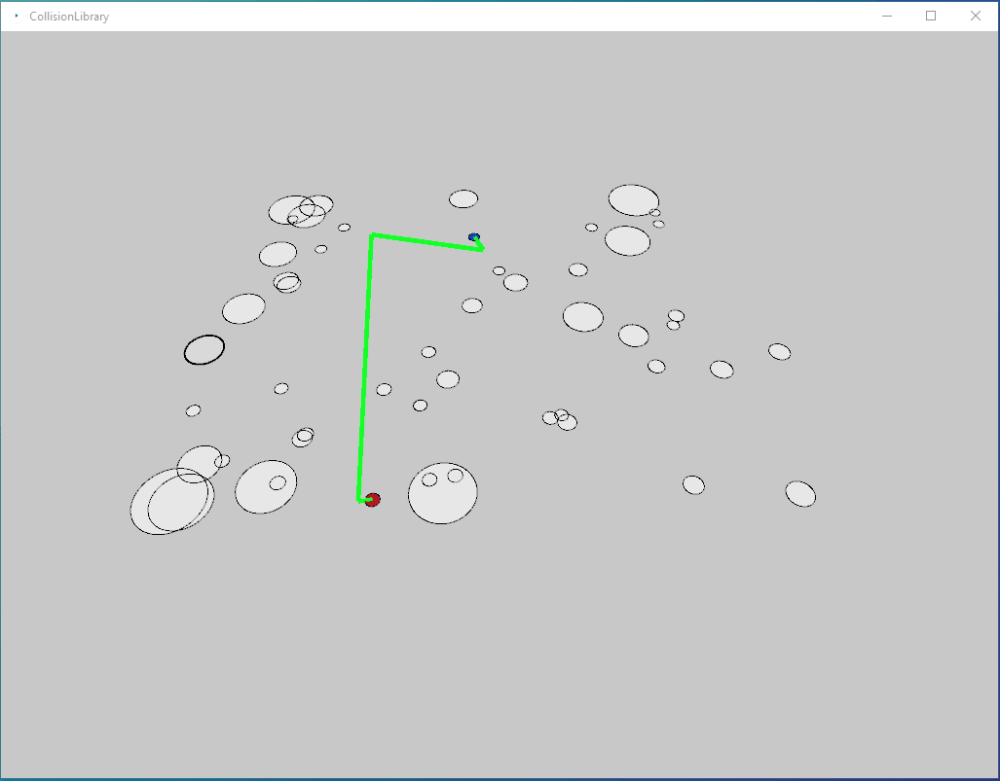
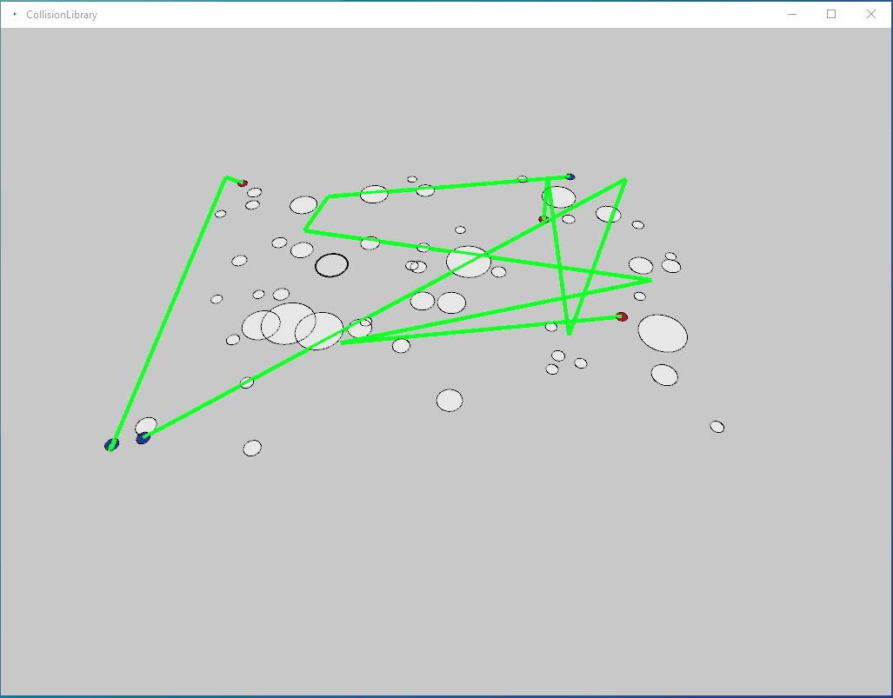

Write Up:
Author - Levi Cavagnetto
EXTERNAL LIBRARIES:
No external libraries were used to make this project. Most of the project source code was modified from the in-class activities.
DIFFICULTIES:
1. Organizing the source code. - I modified the code that we used for the in-class activities. The code given was good for small examples but combining them together quickly became hard to manage. I spent most of my time trying to figure out part 1 of the project and thus fell behind for part 2 and 3.
2. Tuning and fixing odd bugs. - I think most of my project was close to achieving the problems I set out to solve. One particular bug that I could not solve was how the path worked fine with one agent, but adding multiple agents caused their paths to collide with obstacles.
Even though my project 1 only solves some of each problem, I feel that I am more prepared for the next project. I have a better idea of how to modularize the activities that we solve. I also have a better understanding of how the functions can work together to make many different actions happen at once.
FEATURES:
Part 1:
- Added code that ensures that the start node and the end node connections do not collide with obstacles.
- I also attempted writing a UCS algorithm. The code that I submitted successfully finds a path, but it is worse than the BFS
algorithm that was provided.
Part 2:
- An agent is capable of moving through an environment with obstacles to reach its goal position. The path does not collide with
obstacles. The ball sometimes collides with obstacles.
Extra parts attempted:
-3D Rendering & Camera - I added a 3D view to the program.
-Improved Agent & Scene Rendering - Added a ball png file in place of the circle rendered by processing
-Multiple Agents Planning+ - I added multiple agents to the scene.
Part 3:
-The agents somewhat all move towards their goals. The paths are not correct when using multiple agents. The agents also avoid each
other. I used the code from the TCC forces exercise.
One agent navigating the obstacles
The agent somewhat correctly navigates the environment. There are no collisions along the path but the obstacle avoidance is buggy. The animation runs mostly smooth.
Source CodeMutiple agents navigating the obstacles
When adding mutiple agents, the path planning broke and I was unable to find the bug that caused this. The agents head towards their goals. It is not shown very well in this clip, but there is agent avoidance happening. Agents were also pulled towards one another, this caused issues but I was not able to figure out how to take that attraction part out of the code.
Source CodeOne agent navigating different obstacles

The agent completely lost smoothness when adding 3D obstacles to the scene. I was unable to figure out why. This is why I included the videos without the 3D obstacles.
Source Code